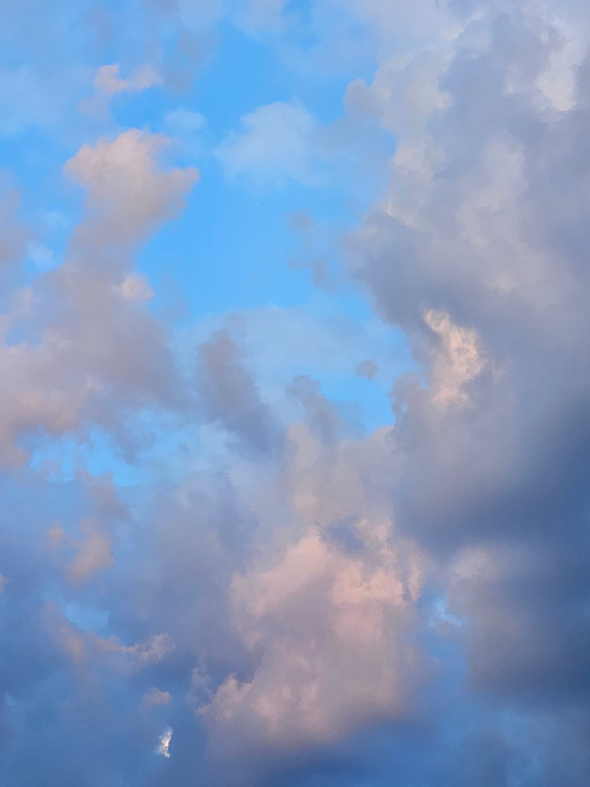
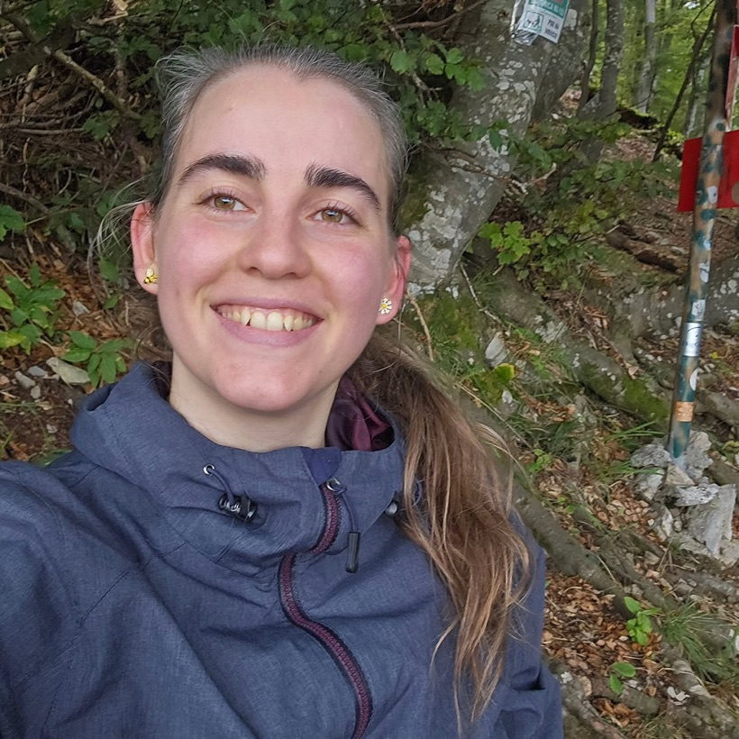
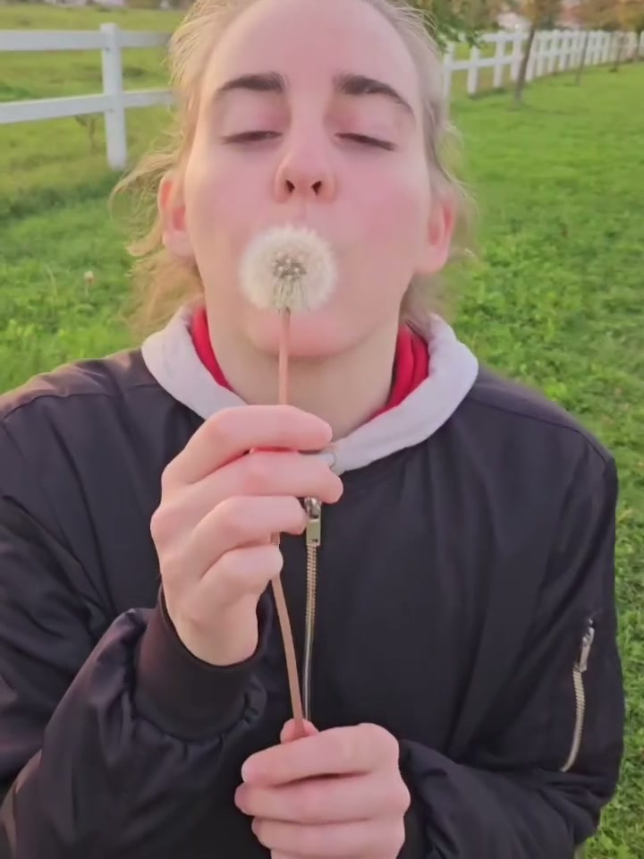
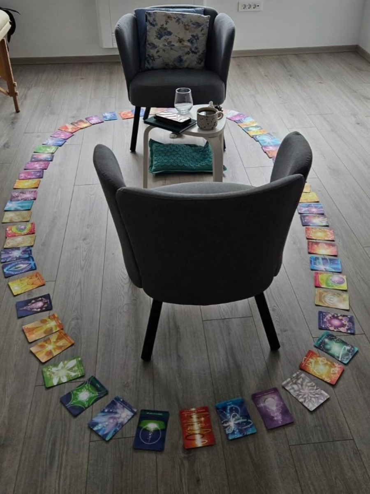
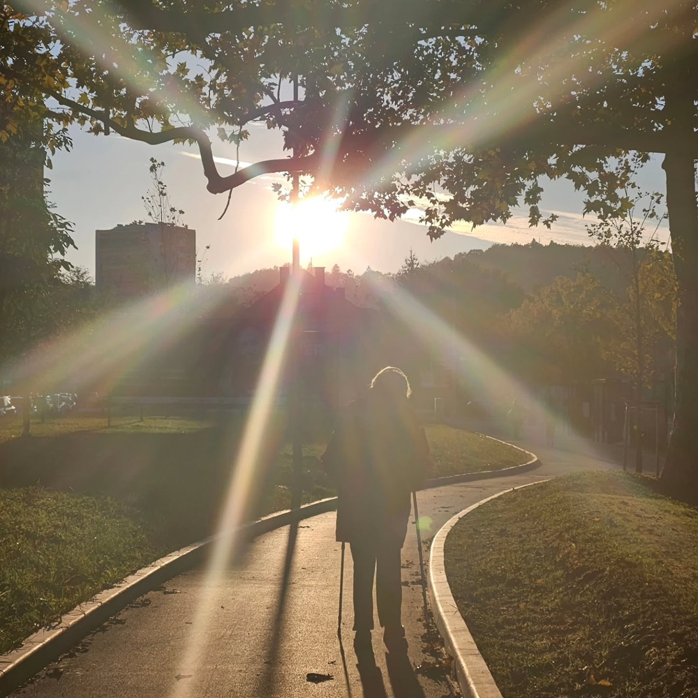
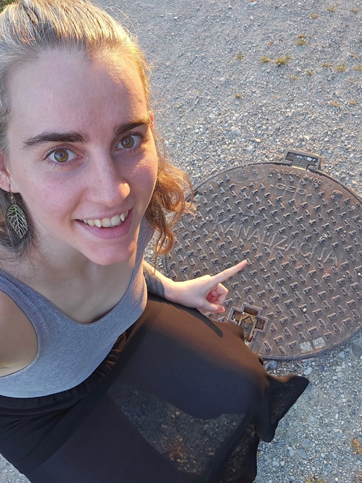

Rebeka Selan Kanaliziranje osebnih angelov
Ko si na razpotju ali v dvomu, ti s sporočili tvojih angelov pomagam videti širšo sliko. Ali pa z meditacijo po meri bolje začutiti sebe.
Domžale · online · preko posnetka


O meni
Živjo, sem Rebeka!
Radovedno bitje, ki ga fascinira nezavedno: človeški možgani, naši vzorci, duhovnost, nevidni svet. Če gre kakšen pogovor v globino, sem takoj zraven. Po drugi strani pa se rada nasmejim do solz.
Nisem bila vedno navdušena nad duhovnostjo. Pravzaprav sem imela do nje kar nekaj odpora, čeprav me je nevidni svet potihem vztrajno fasciniral. Ko sem bila majhna, sem sama testirala, ali imam čarobne moči kot Matilda.
V najtežjem obdobju svojega življenja sem se začela bolj poglabljati vase: s pisanjem dnevnika, terapijami in raziskovanjem svojih vzorcev. Kasneje sem začela raziskovati tudi duhovni svet in moja radovednost je rasla. Ko sem izvedela, da se lahko povežem s svojim duhovnim vodstvom in ga dejansko kaj vprašam, mi ni bilo treba dvakrat reči. Šla sem na tečaj kanaliziranja.
Danes kanaliziram sporočila osebnih angelov tudi za druge. Pri tem mi je najpomembnejše, da se umaknem in predam sporočilo neokrnjeno. Svoje angele imam zelo rada, a se z njimi kdaj tudi skregam, ker mi ne dajo odgovora, ki sem si ga želela. Ja, tudi trma je del mene.
Verjamem v moč misli, prevzemanje odgovornosti za svoje življenje in čarobnost, ki jo lahko odkrijemo na tej poti.
Rebeka
Kanaliziranje
Pogovor s tvojimi osebnimi angeli
»Vem, da si želim nekaj spremenit. Samo ne vem, kje začet.«
Mogoče v odnosih vedno znova rečeš ja, čeprav ti nekaj ne paše. Mogoče te vleče v novo smer, ampak ko je treba narediti prvi korak, začneš dvomiti vase. Ali pa že nekaj časa premlevaš isto odločitev in ti še vedno ni jasno, kaj te pri njej ustavlja.
Kaj je celestialno kanaliziranje?
Kanaliziranje je proces, pri katerem se kot medij povežem s tvojim duhovnim vodstvom, tvojimi osebnimi angeli, in prenašam njihova sporočila. Ne gre za moje mnenje in ne za svetovanje iz razuma. Gre za pretočen prenos jasnosti iz višje ravni zavesti.
Na kanaliziranje prideš z vprašanji o tem, kar trenutno doživljaš. Med kanaliziranjem se povežem s tvojimi angeli in se umaknem, da lahko govorijo skozi mene. Na tvoja vprašanja odgovarjajo sproti, glede na to, kar je res zate v tvoji situaciji.
Kdo so osebni angeli?
Osebni angeli so tvoji najbližji duhovni vodniki, povezani neposredno s tvojo dušo. Ne ukvarjajo se samo z enim področjem, ampak s teboj kot celoto. Poznajo tvojo dušno esenco, darove in smer tvoje poti. Njihova naloga ni obsojanje, temveč ljubeča podpora in usmerjanje.

Kanaliziranje ni
- napovedovanje prihodnosti
- prerokovanje
- moje mnenje ali nasvet iz razuma
Je podpora, da
- razumeš svojo trenutno situacijo
- prepoznaš notranje vzorce
- dobiš jasnost za naslednje korake
Odločitve pa vedno ostajajo tvoje.
Primerno je zate, če
- si v prehodnem obdobju
- iščeš smer ali potrditev
- čutiš, da odgovori niso vedno samo racionalni
- želiš globlji stik s svojo dušo
Vprašanja lahko prineseš o odnosih, delu, zdravju ali svoji življenjski smeri.
Na primer
Doma vedno rečeš »bom jaz«, tudi ko imaš že vsega čez glavo. Šele pozneje ugotoviš, da si spet prevzel preveč. Na kanaliziranje lahko prineseš prav ta trenutek in vprašaš: »Kaj potrebujem razumeti, da se odprem za pomoč? Kako lahko poskrbim zase ob skrbi za druge?«
Ob odgovoru lažje prepoznaš, kaj se ti zgodi v tistem trenutku, in se naslednjič ujameš, preden odreagiraš iz navade.
Kako poteka?
Kanaliziranje pri vseh treh možnostih traja 60 minut. V tem času pride na vrsto toliko vprašanj, kolikor dopušča čas. Če ti je kakšno posebej pomembno, ga daj na prvo mesto.
-
Prek Google Meet
Od koderkoli. Začneva z uvodnim sporočilom tvojih angelov, potem postaviš svoja vprašanja. Če se ti ob odgovoru odpre še kakšno vprašanje, ga lahko postaviš sproti.
-
V živo v Domžalah
Srečanje v mojem prostoru za kanaliziranje, z enakim potekom: uvodno sporočilo tvojih angelov, nato tvoja vprašanja.
Točen naslov: dodati
-
Osebni posnetek
Izbereš katerikoli prost termin, ki služi samo rezervaciji. Na e-pošto, ki ti jo pošljem, odgovoriš s seznamom vprašanj. Odgovore posnamem po vrstnem redu, posnetek pa prejmeš po e-pošti v 3 delovnih dneh od prejema plačila.
- V Calendlyju izbereš način izvedbe in termin.
- Po e-pošti ti pošljem navodila, kako oblikovati vprašanja, in podatke za nakazilo.
- Rezervacija je potrjena, ko prejmem plačilo.
Če se srečanja prek Google Meet ali v Domžalah ne moreš udeležiti, mi prosim sporoči vsaj 24 ur prej, da skupaj poiščeva nov termin. Pri odpovedi manj kot 24 ur pred srečanjem se zaračuna 80 € nadomestila, ob upoštevanju veljavnih potrošniških pravic.
Meditacije
Meditacija, posneta samo zate
Kanalizirana meditacija ni klasična vodena meditacija. Ne temelji na naučenem scenariju, temveč je prejeta. Zato je energija drugačna: bolj živa, bolj usmerjena, bolj osebna.
Meditacijo posnamem za konkretno situacijo, ki mi jo opišeš. Pred snemanjem preberem, kaj se ti dogaja in kaj si želiš, da bi bilo drugače. Med snemanjem se povežem z duhovnimi vodniki, sporočila in energijsko podporo za tvojo situacijo pa prejemam sproti in jih vključujem v meditacijo.
K posnetku se lahko vrneš vsakič, ko se znajdeš v podobni situaciji: pred pogovorom, ko že vnaprej čutiš, da bo težko reči ne, ali po njem, ko še kar premlevaš. Z vsakim poslušanjem se lahko podporna energija meditacije globlje usidra vate.
Za kakšno situacijo?
- Meje v odnosih»Takoj rečem ja, potem pa se jezim, ker spet nimam časa zase.«
- Počitek in okrevanje»Telo rabi pavzo, jaz pa v glavi še kar delam seznam obveznosti.«
- Samozavest pri delu»Na sestanku imam idejo, pa jo zadržim zase, ker me skrbi, kaj si bodo mislili drugi.«
- Zaključek odnosa»Od razhoda je že nekaj časa, jaz pa v glavi še vedno ponavljam najine zadnje pogovore.«
- Spremembe in novi začetki»Želim si spremembe, ampak vedno najdem še eno stvar, ki jo moram urediti, preden naredim prvi korak.«
To je samo nekaj primerov. Če imaš v mislih čisto drugo situacijo, mi jo po domače opiši.
Meditacija je namenjena duhovni in osebni podpori. Pri zdravstvenih ali psihičnih težavah ne nadomešča zdravniškega pregleda, diagnoze ali zdravljenja.

Brezplačne kanalizirane meditacije
Če te zanima, kako zveni kanalizirana meditacija, prisluhni tistim, ki so na voljo vsem.
- Jasnost naslednjega korakaz boginjo Izido
- Prebudi zaupanje vasez boginjo Kuan Jin
- Raztapljanje strahu pred izražanjem sebez zmaji
- Raztapljanje odpora do akcijez nadangelom Mihaelom
- Sproščanje mentalnih procesovz nadangelom Samaelom
- Aktivacija samodisciplinez boginjo Ateno
Izkušnje
»Kot da se je nekaj v meni postavilo na svoje mesto.«
Odzivi po kanaliziranju. Vsak je osebna izkušnja enega srečanja.
-
Po njem čutim predvsem velik mir in pomirjenost. Kot da se je nekaj v meni postavilo na svoje mesto. Čutim potrditev, sprejetost, več jasnosti in tudi občutek, da sem naredila pomemben korak naprej na svoji poti osebnega razvoja.
Hvaležna sem ti, da si ustvarila tako varen in sprejemajoč prostor, v katerem sem se lahko ustavila, prisluhnila sebi in dobila potrditev tistega, kar je bilo morda že ves čas v meni.
-
Na kanaliziranje sem šla prvič in niti nisem vedela, kaj naj točno pričakujem. Malo me je bilo strah, ampak se takoj začuti tvojo toplo energijo.
Že uvodno sporočilo me je prepričalo, saj je bilo točno o tem, kar se mi trenutno dogaja in predelujem. Potem so prišla moja vprašanja, na katere sem dobila odgovore … Priporočala bi te res vsakemu.
-
Z besedami težko opišem, kako hvaležen sem za srečanje s tabo. Tvoja povezava z mojimi angeli mi je prinesla jasnost, ki sem jo iskal, in me spodbudila, da znova verjamem vase.
Te besede so bile točno tisto, kar sem potreboval slišati: iskrena spodbuda, da lahko dosežem, kar si želim, če le verjamem v svojo moč.
-
Po naravi nisem zaupljiv. Zato sem se obiska pri Rebeki dolgo otepal. Pričakovanj nisem imel.
Ampak ko se ti po licu ulijejo solze hvaležnosti, ko slišiš dejstva o sebi, ki jih zunanji svet ne bi smel vedeti … Skupaj z jasnostmi, ki služijo kot vodilo za naprej, da manjkrat obupam na svoji poti. Hvala angeli. In hvala Rebeki.
-
Srčna hvala, da deliš z drugimi svoj dar! Presenetila si me. Tvoja povezava z angeli in vodniki je res kvalitetna. Čuti se, da se daš v kanal in pri kanaliziranju ne vmešavaš sebe.
Že ob prvem stavku so se mi vlile solze. Priporočam vsem.
Podrsaj za več
Angeli v vsakdanu
Ni treba čakati na velike stvari
Včasih mislimo, da se na svoje duhovne vodnike obrnemo samo takrat, ko imamo pred sabo veliko odločitev. Sama verjamem, da jih lahko povabimo v čisto običajne trenutke dneva. Tudi v vožnjo. Tudi k iskanju izgubljenih stvari. In ja, tudi k iskanju parkinga.
-
Ob začetku dneva
»Dragi angeli, vodniki in vsi, ki delujete v moje najvišje dobro, vabim vas v svoj dan. Bodite ob meni. Usmerjajte me, varujte in podpirajte. Hvala!«
Nekaj sekund zjutraj. Ena namera. In potem gremo v dan.
-
Ko greš na pot
»Angelčki, naredite me vidnega vsem voznikom. Naj bo moja pot varna in mirna, naj ob pravem času pridem na cilj … in prosim, zrihtajte mi še parking. Hvala!«
Potem pa samo opazuj.
-
Ko nekaj izgubiš
»Angelčki izgubljenih stvari, prosim, pomagajte mi najti ____. Usmerite me tja, kamor naj pogledam. Hvala!«
Nato za trenutek nehaj iskati na silo. Bodi pozoren, kam te najprej povleče pogled.
-
Ko potrebuješ idejo
»Nadangel Uriel, odpri moje polje ustvarjalnosti, da bom lahko jasno prepoznal možnosti, ki jih trenutno še ne vidim, in prejel navdih za svoj naslednji korak. Hvala!«
Nato pojdi na sprehod. Skuhaj si čaj. Počni nekaj čisto drugega.
-
Ko te nekaj drži nazaj
»Moji angeli in vodniki, pokažite mi, kaj me trenutno drži nazaj in kaj sem pripravljen spustiti. Pomagajte mi prepoznati in razumeti vaš odgovor. Hvala!«
Odgovora ne išči na silo. Morda pride skozi pogovor, misel, ki se vrača, ali preprost »Aaaa … zato!«
-
Pred spanjem
»Angeli spanja, bodite nocoj ob meni. Pomagajte mi, da se umirim in potonem v globok, regenerativen spanec. Naj se zjutraj zbudim spočit ter pripravljen na nov dan. Hvala!«
In potem prepustiš nočno izmeno angelčkom.
Podrsaj za več
Pogosta vprašanja
Kaj te zanima?

Ali je kanaliziranje vedeževanje?
Ne. Kanaliziranje ni namenjeno temu, da bi ti prihodnost predstavilo kot nekaj dokončnega. Nismo le nemočni opazovalci svojega življenja, smo tudi njegovi soustvarjalci.
Zato se ne sprašujemo le, kaj nam bo prinesla prihodnost, temveč predvsem: kako lahko že danes podpremo smer, v katero želimo iti? Jasnost, ki jo prejmeš, je prvi del procesa. Drugi del je, da jo prizemljiš skozi svoje odločitve, dejanja in način, kako se odzivaš na življenje.
Strah me je, kaj mi bodo povedali.
To je eden najpogostejših stavkov, ki jih slišim, preden nekdo prvič pride na kanaliziranje. In ga popolnoma razumem. Veliko ljudi pričakuje kritiko, očitke ali nekaj, česar si ne želijo slišati.
Moja izkušnja je drugačna. Sporočila, ki pridejo skozi kanaliziranje, so tudi takrat, ko odprejo težjo temo, podana z veliko mero ljubezni, razumevanja in nežnosti. Ne z namenom, da bi te prestrašila ali obsojala, ampak da ti pomagajo videti nekaj z več jasnosti.
Kako naj postavim vprašanja?
Ni pomembno, da postaviš »pravilno« vprašanje. Pomembno je, da si dovoliš biti iskren do sebe in pogledaš, kaj te v tem trenutku zares zanima, boli ali zadržuje. Velikokrat si namreč ne upamo vprašati tistega, kar nas najbolj teži, in vprašamo nekaj bolj splošnega. Potem dobimo tudi bolj splošen odgovor.
Bolj kot je vprašanje jasno in konkretno, bolj jasno in uporabno je lahko sporočilo. Po rezervaciji ti po e-pošti pošljem navodila, kako oblikovati vprašanja.
Kako sploh pridejo sporočila?
Sporočila niso vedno glas, ki ga slišiš. Jasnost se lahko pokaže zelo nežno, na štiri načine:
- jasnovidnost: podoba, svetlobni obris, uvid ali notranji film
- jasnoslišnost: glas, zvok ali melodija
- jasnočutnost: občutek v telesu
- jasnovednost: nekaj preprosto veš, pojavi se jasna misel ali celostno zavedanje
V metodi Celestial Inspiration posebno mesto zavzema jasnovednost: jasna misel, ki jo spremlja celosten telesni občutek potrditve. Ko kanaliziram, se um umakne, ego se umiri in srce se odpre. Sporočila prihajajo čista, konkretna in ljubeča.
Kaj se zgodi po kanaliziranju?
Ti odneseš svoja sporočila in jim pustiš, da se v miru usedejo. Jaz pa na svoji strani naredim enako: se prizemljim in zaključim proces. Najbolj mi pomagajo čisto preproste stvari: slana voda, narava, masaža in gibanje.
Kanaliziranje? A ne kanalizacija?
Če bi dobila 1 € vsakič, ko kdo sliši »kanalizacija«, ko rečem kanaliziranje, bi bila danes že kar bogata. Ampak asociacija niti ni tako napačna.
Kanalizacija odvede tisto, česar ne potrebujemo več, da lahko stvari spet normalno tečejo. Kanaliziranje pa ljudem pogosto pomaga prepoznati misli, prepričanja, čustva ali vzorce, ki jih držijo na mestu. Ko jih ozavestimo, se tudi v življenju ustvari več prostora, jasnosti in pretoka.
Kontakt
Kje te lahko podprem?
Če si na kakšni prelomnici ali pa te samo malo vleče raziskovat nekaj novega, je zdaj pravi trenutek. Dobrodošel.
- V živo v Domžalah · prek Google Meet · preko posnetka
- E-pošta: dodati
- Naslov v Domžalah: dodati